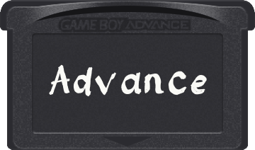
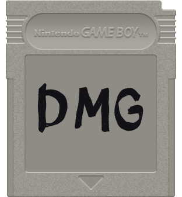
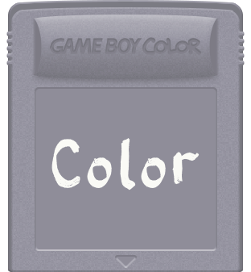
+

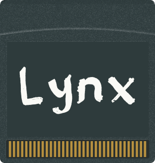

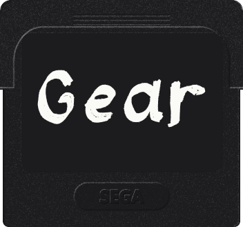


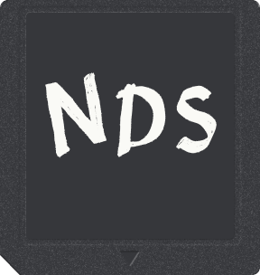

GBA · GB · GBCWonderSwanAtari LynxPokémon miniGame GearNeoGeo PocketTurboGrafx-16Nintendo DSPokeDaisy






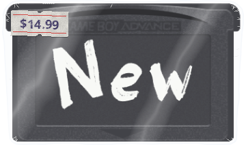
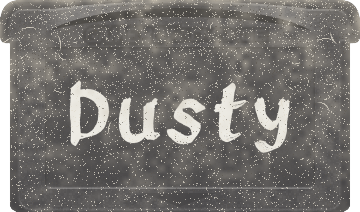
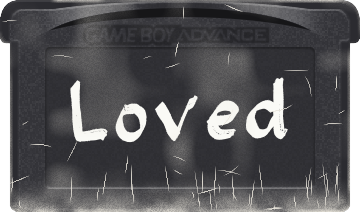
Shrink wrap on games never played, dust on carts left alone, wear on the ones you love.
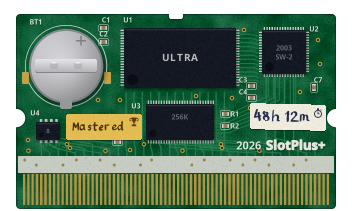
START shows the board inside, with your play time on a sticker.
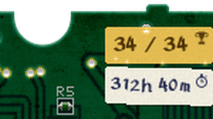
On every system but the DS, with your progress on the cart and the set on the Game Boy Printer.
HDMI out at 1080p. Pull the cable mid-game and play on in your hands.
Game Boy pixels that let a warm backing show through, with soft shadows.
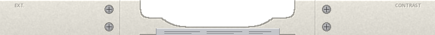
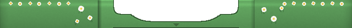
The back of each system's own handheld, from a pearl WonderSwan to a DS Lite.
Also: save backups · romhack patches · Kid Mode with play time · DS screen layouts and stylus · RomM and Gamebit · Settings grouped by what you're doing
CoreRather just play? slotPlus Core has the same shelves, set up for you.